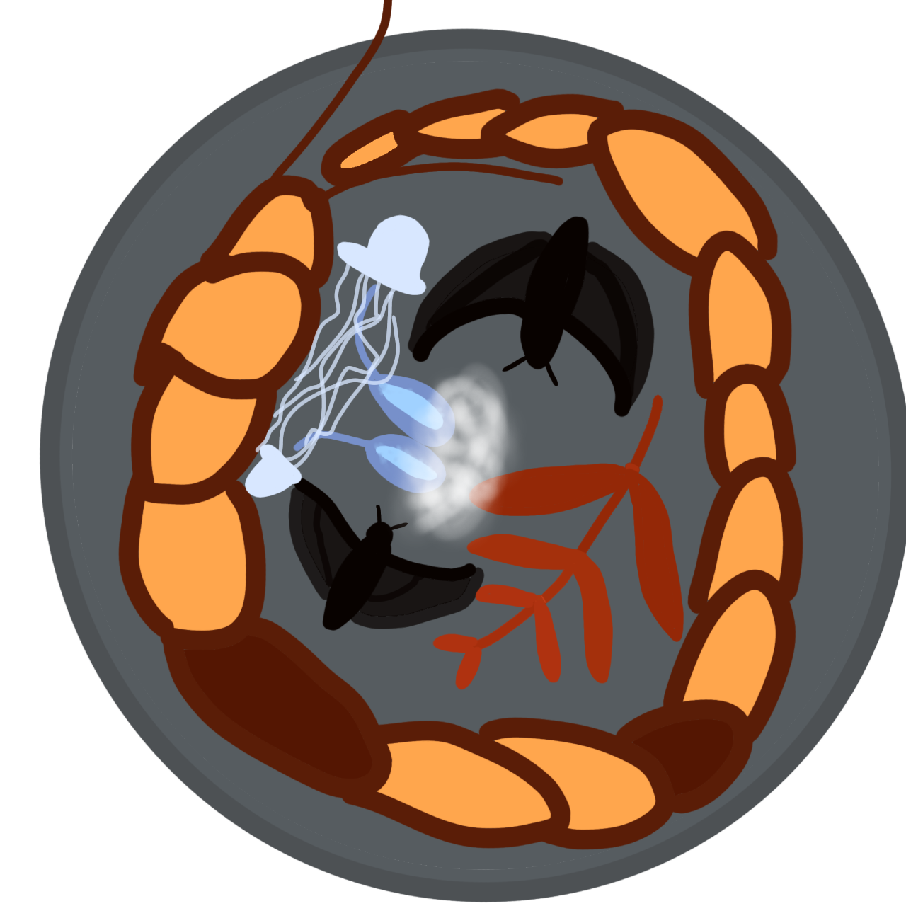
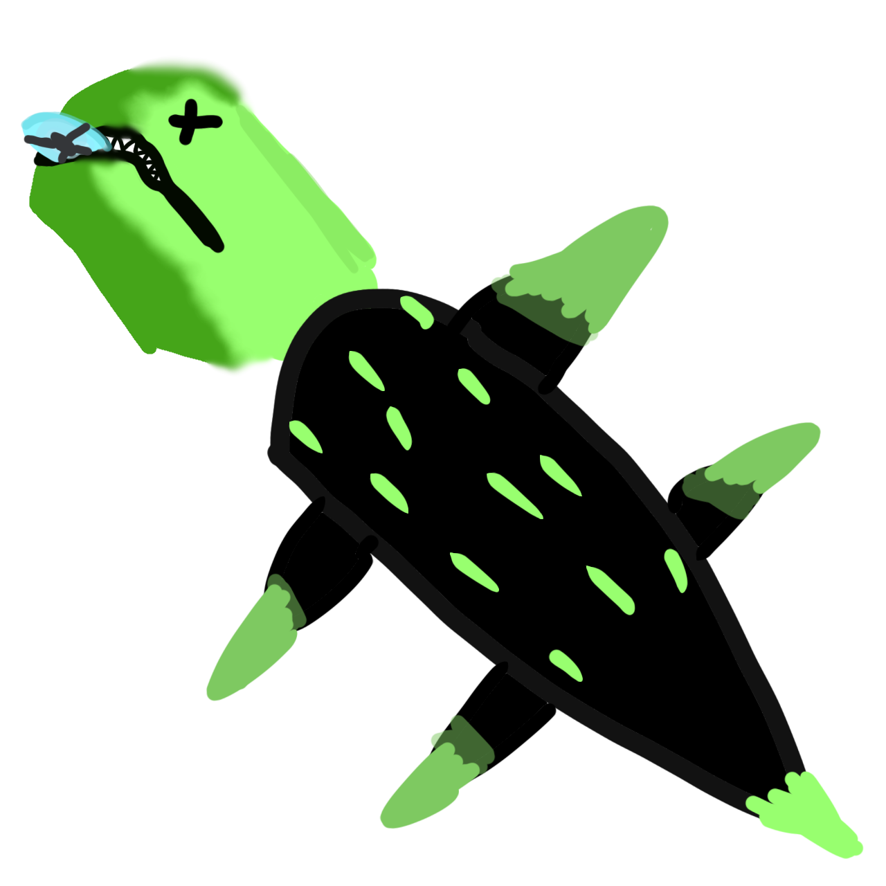

WARNING
Sister Snow is NOT a cook. No responsibility is on sister Snow while following the instructions of the meals presented here. Please contact an expert before trying any of these meals.
Sister Snow's food guide
Sister Snow is NOT a cook. No responsibility is on sister Snow while following the instructions of the meals presented here. Please contact an expert before trying any of these meals.
Pros | Cons
Easy to find | Might anger an adult centipede
Roasting possible but not necesarry | Must kill the infant centipede before eating it safely
Ingredients: Blue fruit x2, Infant centipede x1, Spear x1

Pros | Cons
Variety | No region has all ingredients
Mostly easy to gather | Must kill the adult centipede before eating it safely
Ingredients: Bat x2, Adult centipede x1, Batnip x1, Jellyfish x2, Dandelion peach x2

Pros | Cons
Good to propose with | You have to pop open the gooieduck
Pretty easy to gather | Must kill green lizzie before eating it safely
Close to slugcat home | Regular slugcats can not eat lizards
Ingredients: Green lizard x1, Gooieduck x1
